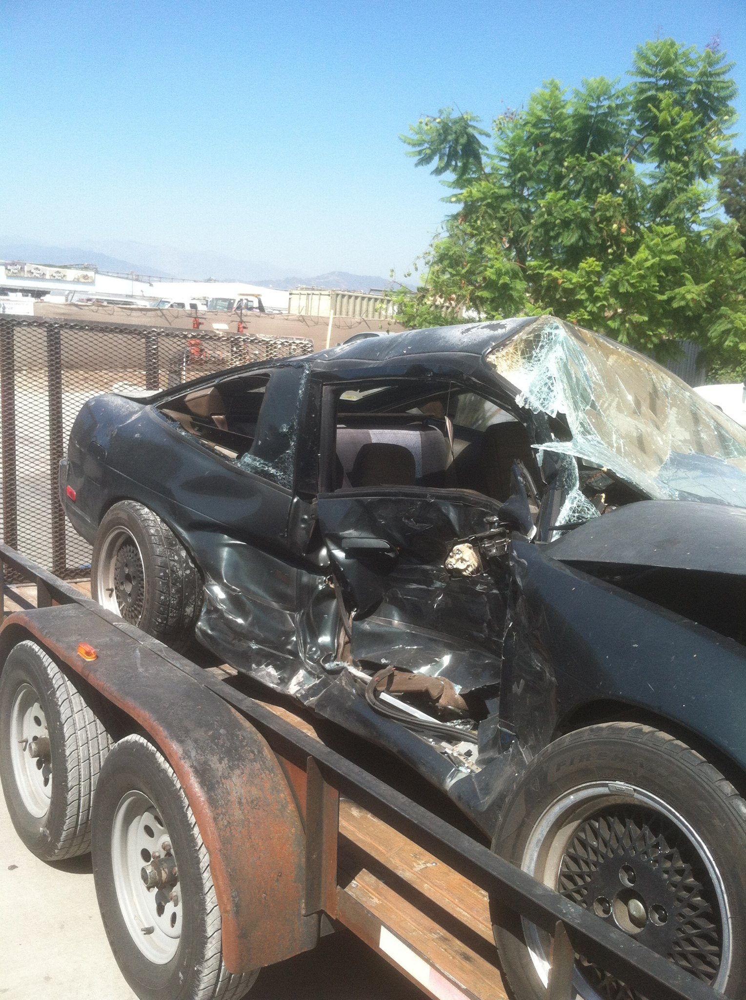

RIP 180
In the Summer of 2012, I had an accident in the I10 in Los Angeles that cause the life of this car. I was T-bone by a Ram 3500 in the driver side of the car. I was pin between the seat and steering wheel. With the help of by standers, I was pulled out and rushed to the holpital. If not for the Megan sway-strut bars, the car would have bened like a taco. 